전자기사 (2009-08-30 기출문제)
1과목: 전기자기학
1. 그림과 같은 무한평면 S위에 한 점 P가 있다. S가 P점에 대해서 이루는 입체각은 얼마인가?
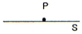
- π
- 2π
- 3π
- 4π
(정답률: 알수없음)

2. 진공 중에 서로 떨어져 있는 두 도체 A, B가 있다. 도체 A에만 1[C]의 전하를 줄 때, 도체 A, B의 전위가 각각 3[V], 2[V]이었다. 지금 도체 A, B에 각각 2[C]과 1[C]의 전하를 주면 도체 A의 전위는 몇 [V] 인가?
- 6[V]
- 7[V]
- 8[V]
- 9[V]
(정답률: 알수없음)
3. 높은 주파수의 전자파가 전파될 때 일기가 좋은 날보다 비 오는 날 전자파의 감쇠가 심한 원인은?
- 도전율 관계임
- 유전률 관계임
- 투자율 관계임
- 분극률 관계임
(정답률: 알수없음)
4. 동일한 금속이라도 그 도체 중 온도차가 있을 때 전류를 흘리면 열의 발생 또는 흡수가 일어나는 현상은?
- 지벡 효과
- 열전 효과
- 펠티에 효과
- 톰슨 효과
(정답률: 알수없음)
5. 환상 철심에 권수 NA인 A코일과 권수 NB인 B코일이 있을 때 코일 A의 자기인덕턴스가 LA[H]라면 두 코일간의 상호인덕턴스[H]는?
- NAㆍLA/NB
- NBㆍLA/NA
- NA2ㆍLA/NB
- NB2ㆍLA/NA
(정답률: 알수없음)
6. 자기모멘트 9.8×10-5[Wbㆍm]의 막대자석을 지구자계의 수평 성분 12.5[T/m]의 곳에서 지자기 자오면으로부터 90° 회전시키는데 필요한 일은 약 몇 [J] 인가?
- 1.23×10-3[J]
- 1.03×10-5[J]
- 9.23×10-3[J]
- 9.03×10-5[J]
(정답률: 알수없음)
7. 반지름 a[m]인 접지 구도체의 중심에서 d[m](＞a)되는 점에 점전하 Q가 있을 때 영상전하 Q'의 크기는?
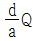
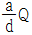
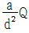
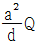
(정답률: 알수없음)
8. 정전계에서 도체에 점(+)의 전하를 주었을 때 다음 설명 중 옳지 않은 것은?
- 도체표면의 곡률반지름이 작은 곳에 전하가 많이 분포한다.
- 도체외측의 표면에만 전하가 분포한다.
- 도체표면에서 수직으로 전기력선이 출입한다.
- 도체 내에 있는 공동면에도 전하가 골고루 분포한다.
(정답률: 알수없음)
9. 전지에 연결된 진공 평행판 콘덴서에서 진공 대신 어떤 유전체로 채웠더니 충전전하가 2배로 되었다면 전기 감수율(susceptibility) Xer은 얼마인가?
- 0
- 1
- 2
- 3
(정답률: 알수없음)
10. 정현파 자속의 주파수를 3배로 높이면 유기 기전력은?
- 3배 증가
- 9배 증가
- 3배 감소
- 9배 감소
(정답률: 알수없음)
11. 평행판 콘덴서가 있다. 전극은 반지름이 30[cm]인 원판이고 전극간격은 0.1[cm]이며 유전체의 유전율은 4.0이라 한다. 이 콘덴서의 정전용량은 약 몇 [μF] 인가?
- 0.01[μF]
- 0.02[μF]
- 0.03[μF]
- 0.04[μF]
(정답률: 알수없음)
12. 다음 중 전속밀도에 대한 설명으로 가장 옳은 것은?
- 전속은 스칼라양이기 때문에 전속밀도도 스칼라양이다.
- 전속밀도는 전계의 세기 방향과 반대 방향이다.
- 전속밀도는 유전체 내에 분극의 세기와 같다.
- 전속밀도는 유전체가 있던, 없던 관계없이 크기는 일정하다.
(정답률: 알수없음)
13. 진공 중에서 유전율 ε[F/m]의 유전체가 평등자계 B[Wb/m2] 중일 속도 v [m/s]로 운동할 때 유전체에 발생하는 유전 분극의 세기[C/m2]는 어떻게 표현되는가?
- (ε-ε0)v ×B
- (ε-ε0)B×v
- εB×v
- ε0v×B
(정답률: 알수없음)
14. 진공 중에 있는 두 점자극 +m[Wb]과 -m[Wb]이 r[m] 거리에 있을 때, 두 점 자극을 잇는 직선의 중앙점에서 자계의 크기[AT/m]는?
- m/πμ0r2
- 2m/πμ0r2
- m/4πμ0r2
- m/2πμ0r2
(정답률: 알수없음)
15. 도체의 전계 에너지는 도체 전위에 대하여 어떤 상태의 도형으로 표현되는가?
- 직선
- 쌍곡선
- 포물선
- 원형곡선
(정답률: 알수없음)
16. 공기 중에서 1[V/m]의 전계를 2[A/m2]의 변위전류로 흐르게 하려면 주파수는 약 몇 [MHz]가 되어야 하는가?
- 18[MHz]
- 1800[MHz]
- 3600[MHz]
- 36000[MHz]
(정답률: 알수없음)
17. εS = 10 인 유리콘덴서와 동일 크기의 ε S =1인 공기콘덴서가 있다. 유리콘덴서에 100[V]의 전압을 가할 때 동일한 전하를 축적하기 위하여 공기콘덴서에 필요한 전압은 몇 [V] 인가?
- 20[V]
- 200[V]
- 400[V]
- 2000[V]
(정답률: 알수없음)
18. 물(ε = 80, μ = 1) 중의 전자파의 속도는 약 몇 [m/s] 인가?
- 3.35×107[m/s]
- 2.67×108[m/s]
- 3.0×109[m/s]
- 9.0×109[m/s]
(정답률: 알수없음)
19. 임의의 단면을 가진 2개의 원주상의 무한히 긴 평행도체가 있다. 지금 도체의 도전율을 무한대라고 하면 C, L, ε 및 μ 사이의 관계는? (단, C는 두 도체간의 단위길이당 정전용량, L은 두 도체를 한 개의 왕복회로로 한 경우의 단위길이당 자기 인덕턴스, ε은 두 도체사이에 있는 매질의 유전율, μ는 두 도체사이에 있는 매질의 투자율이다.)
- C/ε = L/μ
- 1/LC = εㆍμ
- LC = εㆍμ
- Cㆍε = Lㆍμ
(정답률: 알수없음)
20. 평행판 사이에 유전율이 ε1, ε2 되는 (ε2＜ε1) 유전체를 경계면이 판에 평행하게 그림과 같이 채우고 그림의 극성으로 극판사이에 전압을 걸었을 때 두 유전체 사이에 작용하는 힘은?
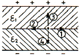
- ①의 방향
- ②의 방향
- ③의 방향
- ④의 방향
(정답률: 알수없음)
2과목: 회로이론
21. 다음 회로에 흐르는 전류 I는 약 몇 [A] 인가? (단, E : 100[V], ω : 1000[rad/sec])
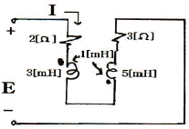
- 8.95
- 7.24
- 4.63
- 3.52
(정답률: 알수없음)
22. 다음 회로망의 합성 저항은?
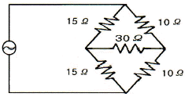
- 6[Ω]
- 12[Ω]
- 30[Ω]
- 50[Ω]
(정답률: 알수없음)
23. 이상 변압기(Ideal Transformer)에 대한 설명으로 옳지 않은 것은?
- 각 코일의 인덕턴스가 무한대일 것
- 두 코일의 결합 계수가 1일 것
- 종단 임피던스가 무한대 일 것
- 코일에 관계되는 손실이 없을 것
(정답률: 알수없음)
24. 다음 설명 중 옳은 것은?
- 루프 해석법과 절점 해석법은 망로 해석법과는 달리 비평면 회로에 대해서는 적용될 수 있다.
- 루프 해석법과 망로 해석법은 절점 해석법과는 달리 비평명 회로에 대해서만 적용할 수 있다.
- 루프 해석법과 망로 해석법 및 절점 해석법 모두 비평면 회로에 대해서도 적용될 수 있다.
- 루프 해석법과 절점 해석법은 망로 해석법과는 달리 평면 회로에 대해서만 적용될 수 있다.
(정답률: 알수없음)
25. 두 함수 f1(t) = 1, f1(t) = 1 일 때 합성 적분치는?
- e-t
- 1-et
- 1-e-t
- 1/1-e-t
(정답률: 알수없음)
26.
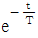
인 감쇠지수 함수의 진폭 스펙트럼은?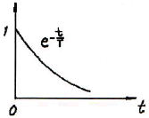
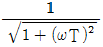
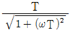
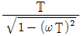
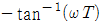
(정답률: 알수없음)
27. R-L-C 직렬회로에 대하여, 임의 주파수를 인가하였을 때 회로의 특성이 공진 회로의 특성으로 나타났다. 동일한 이 회로에 대하여 주파수를 증가시켰을 때, 주파수에 따른 회로의 특성으로 옳은 것은?
- 유도성 회로의 특성으로 나타난다.
- 용량성 회로의 특성으로 나타난다.
- 저항성 회로의 특성으로 나타난다.
- 공진 회로의 특성으로 나타난다.
(정답률: 알수없음)
28. 다음의 회로망 방정식에 대하여 S 평면에 존재하는 극은?
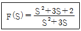
- 3, 0
- -3, 0
- 1, -3
- -1, -3
(정답률: 알수없음)
29. 지수함수 e-at 의 라플라스 변환은?
- 1/S-a
- 1/S+a
- S+a
- S-a
(정답률: 알수없음)
30. 그림의 T형 4단자 회로에 대한 전송 파라미터 D는?
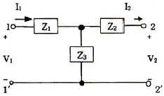
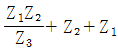
- 1+Z1/Z3
- 1+Z2/Z3
- 1/Z3
(정답률: 알수없음)
31. 그림과 같은 회로에서 테브난 등가 전압은?
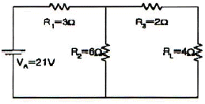
- 10.5[V]
- 14[V]
- 19.5[V]
- 21[V]
(정답률: 알수없음)
32. 원점을 지나지 않는 원의 역 궤적은?
- 원점을 지나는 원
- 원점을 지나는 직선
- 원점을 지나지 않는 원
- 원점을 지나지 않는 직선
(정답률: 알수없음)
33. S 평명 상에서 전달함수의 극점(pole)이 그림과 같은 위치에 있으면 이 회로망의 상태는?
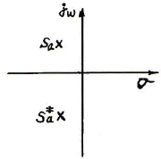
- 발진하지 않는다.
- 점점 더 크게 발진한다.
- 지속 발진한다.
- 감쇠 진동한다.
(정답률: 알수없음)
34. 임피던스 함수
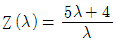
로 표시되는 2단자 회로망을 도시하면?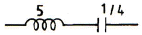
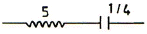
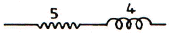
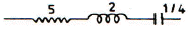
(정답률: 알수없음)
35. 최대 눈금이 50[V]인 직류 전압계가 있다. 이 전압계를 사용하여 150[V]의 전압을 측정하려면 배율기의 저항은 몇 [Ω]을 사용하여야 하는가? (단, 전압계의 내부 저항은 5000[Ω]이다.)
- 10000
- 15000
- 20000
- 25000
(정답률: 알수없음)
36. V = 31lsin(377t-π/2) 인 파형의 주파수는 약 얼마인가?
- 60[Hz]
- 120[Hz]
- 311[Hz]
- 377[Hz]
(정답률: 알수없음)
37. 다음 그림의 변압기에서 R1에서 본 등가 저항을 구하면? (단, 이상 변압기로 가정)
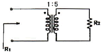
- 25R2
- R2/25
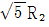
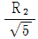
(정답률: 알수없음)
38. 무한장 전송 선로의 특성 임피던스 Z0는? (단, R, L, C, G는 각각 단위 길이당의 저항, 인덕턴스, 컨덕턴스, 커패시턴스이다.)
- Z0 = (R + jωL)(G + jωC)
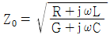
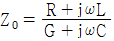
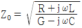
(정답률: 알수없음)
39. 그림은 반파정류에서 얻은 파형이다. 이 전류의 실효치(rms)는?
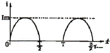
- Im/2
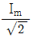
- 2Im
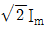
(정답률: 알수없음)
40. 다른 두 종류의 금속선으로 된 폐회로의 두 접합점의 온도를 달리하였을 때 열기전력이 발생하는 효과는?
- peltier 효과
- Seebeck 효과
- Pinch 효과
- Thomson 효과
(정답률: 알수없음)
3과목: 전자회로
41. 트랜지스터의 직류 증폭기에 있어서 드리프트를 초래하는 주된 원인으로 적합하지 않은 것은?
- hfe의 온도변화
- hre의 온도변화
- VBE의 온도변화
- ICO의 온도변화
(정답률: 알수없음)
42. 주파수변조에서 반송주파수를 fc, 변조주파수를 fm, 최대주파수 편이를 △f 라 하면 변조 지수는?
- fc+△f/fc
- fm/fc
- △f/fm
- fc+fm
(정답률: 알수없음)
43. 다음 중 QAM(직교진폭변조) 방식에 대한 설명으로 가장 적합한 것은?
- QAM 방식은 PSK 변조방식의 일종이다.
- QAM 방식은 AM 방식과 FSK 변조방식을 혼합한 것이다.
- QAM 방식은 정보신호에 따라 반송파의 진폭과 위상을 변화시키는 APK의 한 종류이다.
- QAM 방식은 주파수 변조와 위상 변조 방식을 혼합한 것이다.
(정답률: 알수없음)
44. 다음 회로는 BJT의 소신호 등가 모델이다. 여기서 rO와 가장 관련이 깊은 것은?
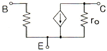
- Early 효과
- Miller 효과
- Pinchoff 효과
- Breakdown 효과
(정답률: 알수없음)
45. 전압이득이 60[dB], 왜율 10[%]인 저주파 증폭기의 왜율을 0.1[%]로 개선하기 위해서는 부궤환율(β)을 얼마로 하여야 하는가?
- 0.9
- 0.22
- 0.12
- 0.099
(정답률: 알수없음)
46. 다음과 같은 궤환회로의 입력임피던스는 궤환이 엇을 때와 비교하면 어떻게 변하는가?
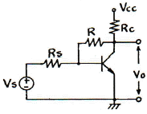
- 증가한다.
- 변화없다.
- 감소한다.
- R이 된다.
(정답률: 알수없음)
47. 다음 회로에서 입력전압 V1, V2와 출력전압 VO의 관계는?
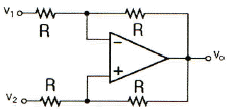
- VO = V2-V1
- VO = V1-V2
- VO = 1/2(V2-V1)
- VO = 1/2(V2+V1)
(정답률: 알수없음)
48. 연산증폭기에서 차동출력이 0[V]가 되도록 하기 위하여 입력단자 사이에 걸어주는 것은?
- 입력 오프셋 전류
- 출력 오프셋 전압
- 입력 오프셋 전압
- 입력 바이어스 전류
(정답률: 알수없음)
49. A급과 B급 증폭기의 최대효율은 얼마인가?
- A급 25[%], B급 50[%]
- A급 50[%], B급 78.5[%]
- A급 78.5[%], B급 78.5[%]
- A급 78.5[%], B급 100[%]
(정답률: 알수없음)
50. 부성저항 특성을 이용하여 발진회로에 응용 가능한 소자는?
- CDS
- 써미스터
- 터널 다이오드
- 제너 다이오드
(정답률: 알수없음)
51. C급 증폭회로의 장점으로 가장 적합한 것은?
- 회로 구성이 간단하다.
- 전력효율이 좋다.
- 잡음이 감소한다.
- 출력파형의 일그러짐이 감소한다.
(정답률: 알수없음)
52. 증폭기의입력전압이 0.028[V]일 때 출력전압이 28[V]이다. 이 증폭기에서 궤환율 β = 0.012로 부궤환 시켰을 때의 출력전압은 약 몇 [V] 인가?
- 2.15[V]
- 3.23[V]
- 4.75[V]
- 5.34[V]
(정답률: 알수없음)
53. 트랜지스터 고주파 특성의 α 차단주파수(fα)에 대한 설명으로 가장 적합한 것은?
- 컬렉터 용량에만 비례한다.
- 베이스 폭과 컬렉터 용량에 각각 반비례 한다.
- 컬렉터 인가 전압에 비례한다.
- 베이스 폭의 자승에 반비례하고, 확산계수에 비례한다.
(정답률: 알수없음)
54. 다음 회로에서 궤환율 β는 약 얼마인가?
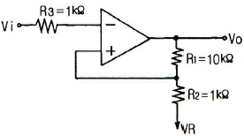
- 0.01
- 0.09
- 0.25
- 0.52
(정답률: 알수없음)
55. 다음 연산회로에서 입력전압이 각각 V1 = 5[V], V2 = 10[V]이고, 저항 R1 = R2 = Rf = 10[kΩ]일 때 출력전압 VO는 몇 [V] 인가?
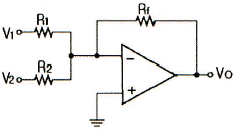
- -5[V]
- 10[V]
- -15[V]
- 20[V]
(정답률: 알수없음)
56. 고역통과형 CR 이상형 발진기에서 발진주파수는 1000[Hz]이다. 이 발진기에서 C = 0.0⑤[μF]이면 R은 약 얼마인가?
- R = 10[kΩ]
- R = 11[kΩ]
- R = 13[kΩ]
- R = 78[kΩ]
(정답률: 알수없음)
57. 다음 회로에서 제너 다이오드에 흐르는 전류[A]는? (단, 제너 다이오드의 제너 전압은 15[V]이다.)
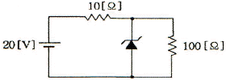
- 0.15[A]
- 0.25[A]
- 0.35[A]
- 0.9[A]
(정답률: 알수없음)
58. 다음 중 연산증폭기의 응용 회로가 아닌 것은?
- 적분기
- 미분기
- 비교기
- 디지털 반가산기
(정답률: 알수없음)
59. RC 결합 증폭기에서 구형파 입력 전압에 대한 그림과 같은 출력이 나온다면 이 증폭기의 주파수 특성에 대한 설명으로 가장 적합한 것은?
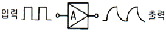
- 저역특성이 좋지 않다.
- 중역특성이 좋지 않다.
- 대역폭이 너무 넓다.
- 고역특성이 좋지 않다.
(정답률: 알수없음)
60. 다음 중 연산증폭기를 이용한 슈미트 트리거 회로를 사용하는 목적으로 가장 적합한 것은?
- 톱니파를 만들기 위하여
- 정전기를 방지하기 위하여
- 입력신호에 대하여 전압보상을 하기 위하여
- 입력전압 등 노이즈에 의한 오동작을 방지하기 위하여
(정답률: 알수없음)
4과목: 물리전자공학
61. 확산 정수 D, 이동도 μ, 절대온도 T간의 관계식을 옳게 나타낸 것은? (단, k는 볼츠만 상수이고, e는 캐리어의 전하이다.)
- D/μ = kT
- D/μ = kT/e
- μ/D = kT
- μ/D = kT/e
(정답률: 알수없음)
62. 접합 트랜지스터에서 주입된 과잉 소수 캐리어는 베이스 영역을 어떤 방법에 의해서 흐르는가?
- 확산에 의해서
- 드리프트에 의해서
- 컬렉터 접합에 가한 바이어스 전압에 의해서
- 이미터 접합에 가한 바이어스 전압에 의해서
(정답률: 알수없음)
63. 실리콘 제어 정류소자(SCR)의 설명으로 옳지 않은 것은?
- 동작원리는 PNPN 다이오드와 같다.
- 일반적으로 사이리스터(thyristor)라고도 한다.
- 게이트 전류에 의하여 방전개시 전압을 제어할 수 있다.
- SCR의 브레이크 오버 전압은 게이트가 차단 상태로 들어가는 전압이다.
(정답률: 알수없음)
64. 양자화된 에너지로 분포되나 파울리(Pauli)의 배타 원리가 적용되지 않는 광자를 취급하는 분포 함수는?
- Sommerfeld 분포 함수
- Fermi-Dirac 분포 함수
- Bose-Einstein 분포 함수
- Maxwell-Boltzmann 분포 함수
(정답률: 알수없음)
65. 다음과 같은 원리와 관계되는 것은?
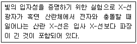
- 홀 효과(Hall effect)
- 콤프턴 효과(Compton effect)
- 쇼트키 효과(Schottky effect)
- 흑체방시(black body radiation)
(정답률: 알수없음)
66. 다음 중 FET를 단극성 소자라고 하는 이유는?
- 게이트가 대칭인 구조이기 때문이다.
- 전자만으로써 전류가 운반되기 때문이다.
- 소스와 드레인 단자가 같은 성질이기 때문이다.
- 다수 캐리어만으로써 전류가 운반되기 때문이다.
(정답률: 알수없음)
67. 광전자 방출 현상에 있어서 방출된 전자의 에너지는?
- 광의 세기에 비례한다.
- 광의 속도에 비례한다.
- 광의 주파수에 비례한다.
- 광의 주파수에 반비례한다.
(정답률: 알수없음)
68. 2500[V]의 전압으로 가속된 전자의 속도는 약 얼마인가?
- 2.97×107[m/s]
- 9.07×107[m/s]
- 2.97×106[m/s]
- 9.077×106[m/s]
(정답률: 알수없음)
69. 진성 반도체에서 전자나 정공의 농도가 같다고 할 때 전도대의 준위를 0.4[eV], 가전자대의 준위가 0.8[eV]라 하면 Fermi 준위는 몇 [eV] 인가?
- 0.32
- 0.6
- 1.2
- 1.44
(정답률: 알수없음)
70. 선형적인 증폭을 위해서 트랜지스터의 동작점은?
- 포화영역 부근에 세워져야 한다.
- 차단영역 부근에 세워져야 한다.
- 활성영역 부근에 세워지기만 하면 된다.
- 차단영역과 포화영역 중간 지점에 세워져야 한다.
(정답률: 알수없음)
71. Pauli의 배타율 원리를 만족하는 분포 함수는?
- Fermi-Dirac
- Bose-Einstein
- Gauss-error function
- Maxwell-Boltzmann
(정답률: 알수없음)
72. 다음 중 1[eV]의 운동에너지 값은?
- 1.6×10-19[J]
- 9.1×1031[J]
- 1.6×1031[J]
- 9.1×1019[J]
(정답률: 알수없음)
73. 다음 원소 중 P형 반도체를 만드는 불순물이 아닌 것은?
- 인듐(In)
- 안티몬(Sb)
- 붕소(B)
- 알루미늄(Al)
(정답률: 알수없음)
74. 반도체의 특성에 대한 설명 중 옳지 않은 것은?
- 홀 효과가 크다.
- 빛을 쪼이면 도전율이 증가한다.
- 온도에 의해 도전율이 현저하게 변화한다.
- 불순물을 첨가하면 도전율이 감소한다.
(정답률: 알수없음)
75. 페르미(Fermi) 준위가 금지대의 중앙에 위치하여 자유전자와 정공의 농도가 같은 반도체는?
- 불순물 반도체
- 순수 반도체
- P형 반도체
- N형 반도체
(정답률: 알수없음)
76. 전계의 세기 E = 105[V/m]의 평등 전계 중에 놓인 전자에 가해지는 전자의 가속도는 약 얼마인가?
- 1600[m/s2]
- 1.602×10-14[m/s2]
- 5.93×105[m/s2]
- 1.75×1016[m/s2]
(정답률: 알수없음)
77. 다음 중 에피택셜(epitaxial) 성장이란?
- 다결정의 Ge 성장
- 다결정의 Si 성장
- 기판에 매우 얇은 단결정의 성장
- 기판에 매우 얇은 다결정의 성장
(정답률: 알수없음)
78. 컬렉터 접합의 공간 전하층은 컬렉터 역바이어스가 증가함에 따라 넓어지며 따라서 베이스 중성영역의 폭이 줄어든다. 이러한 현상은?
- Early 효과
- Tunnel 효과
- punch-through
- Miller 효과
(정답률: 알수없음)
79. 다음 중 물질의 구성과 관계없는 입자는?
- 전자
- 중성자
- 양자
- 광자
(정답률: 알수없음)
80. pn접합 다이오드의 확산 용량에 관한 설명으로 옳은 것은?
- 공간 전하에 의한 용량이다.
- 다수캐리어의 확산작용에 의한 용량이다.
- 역바이어스에 의한 소수캐리어의 확산작용에 의한 용량이다.
- 순바이어스에 의하여 주입된 소수캐리어의 확산작용에 의한 용량이다.
(정답률: 알수없음)
5과목: 전자계산기일반
81. 어셈블리 언어(Assembly Language)로 된 프로그램을 기계어(Machine Language)로 변환하는 것은?
- Compiler
- Translator
- Assembler
- Language Decoder
(정답률: 알수없음)
82. 다음은 무슨 연산 동작을 나타내는 것인가? (단, A, B는 입력 값을 의미하고, R1, R2, R3, R4는 레지스터를 의미한다.)
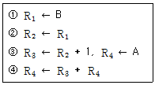
- Addition
- Subtraction
- Multiplication
- Division
(정답률: 알수없음)
83. 캐시 메모리의 매핑방법 중 같은 인덱스를 가졌으나 다른 tag를 가진 두 개 이상의 워드가 반복하여 접근된다면 히트율이 상당히 떨어질 수 있는 것은?
- direct 매핑
- set-associative 매핑
- associative 매핑
- indirect 매핑
(정답률: 알수없음)
84. 다음 중 버스 사용을 중재하는 방법이 아닌 것은?
- 중앙 집중식 병렬 중재
- 직렬 중재 혹은 데이지 체인
- 폴링에 의한 중재
- 핸드셰이크에 의한 중재
(정답률: 알수없음)
85. 다음 알고리즘이 나타내고 있는 연산은?
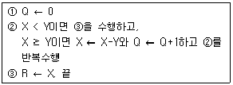
- 덧셈
- 뺄셈
- 곱셈
- 나눗셈
(정답률: 알수없음)
86. 다음 중 타이머(timer)에 의하여 발생하는 인터럽트에 해당하는 것은?
- 외부적 인터럽트
- 내부적 인터럽트
- 트랩(trap)
- 프로그램 인터럽트
(정답률: 알수없음)
87. 컴퓨터의 명령어 형식이 다음과 같다고 할 때 이에 대한 설명으로 틀린 것은?
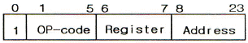
- 이 마이크로컴퓨터가 만들어 낼 수 있는 최대의 동작수는 32가지이다.
- 프로세서를 지정하는 필드가 2비트이므로 4개의 레지스터를 가질 수 있다.
- MBR은 24비트를 가진다.
- 한 워드당 비트 수는 24비트이므로 MAR의 크기는 24 비트이다.
(정답률: 알수없음)
88. 두 수의 부호 비교 판단에 적합한 것은?
- NOR
- OR
- NAND
- EX-OR
(정답률: 알수없음)
89. 다음 RAID 중 대형 렠코드가 많이 사용되는 업무에서 단일 사용자시스템에 적합한 것은?
- RAID-1
- RAID-2
- RAID-3
- RAID-4
(정답률: 알수없음)
90. DSP(digital signal processor)에 대한 설명으로 틀린것은?
- 디지털 신호 처리를 위해 특별히 제작된 마이크로프로세서이다.
- 멀티태스킹을 지원하는 하드웨어 구조이다.
- 특히 실시간 운영체제 계산에 사용된다.
- 프로그램과 데이터 메모리를 분리한 구조이다.
(정답률: 알수없음)
91. 서브루틴 또는 프로시저라고 하는 프로그램의 일부분으로 분기하는데 유용하게 사용되는 명령어는?
- LOAD
- SKIP
- PUSH
- BSA
(정답률: 알수없음)
92. 컴퓨터가 직접 해독할 수 있는 2진 숫자(binary digit)로 나타낸 언어는?
- 기계어(machine language)
- 컴파일러 언어(compiler language)
- 어셈블리 언어(assembly language)
- 기호식 언어(symbolic language)
(정답률: 알수없음)
93. 다음은 ADD(addition) 명령어의 마이크로오퍼레이션이다. t2 시간에 가장 알맞은 동작은? (단, MAR : Memory Address Register) MBR : Memory Buffer Register, M[addr] : Memory, AC : 누산기)
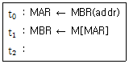
- AC ← MBR
- MBR ← AC
- M[MBR] ← MBR
- AC ← AC+MBR
(정답률: 알수없음)
94. 컴퓨터에 쓰이는 버퍼(buffer)에 관한 설명으로 가장 옳은 것은?
- 입ㆍ출력장치와 주기억장치 사이의 속도차를 보완하기 위한 일시적 기억장소이다.
- CPU와 주기억장치 사이의 속도차를 해결하기 위한 영구 기억장치이다.
- CPU와 입ㆍ출력장치 사이의 속도차를 해결하기 위한 용량 확대 장치이다.
- 주기억장소보다 넓은 기억장소를 확보하기 위하여 CPU의 일부를 가상으로 사용하는 기억장소이다.
(정답률: 알수없음)
95. BCD 코드 1001에 대한 해밍 코드를 구하면? (단, 짝수 패리티 체크를 수행한다.)
- 1000011
- 0100101
- 0011001
- 0110010
(정답률: 알수없음)
96. 기억된 프로그램의 명령을 하나씩 읽고 해독하여 각 장치에 필요한 지시를 하는 기능은?
- 기억 기능
- 연산 기능
- 제어 기능
- 입ㆍ출력 기능
(정답률: 알수없음)
97. 연산 결과를 일시적으로 기억하고 있는 레지스터는?
- 누산기(accumulator)
- 기억 레지스터(storage register)
- 메모리 레지스터(memory register)
- 인스트럭션 카운터(instruction counter)
(정답률: 알수없음)
98. 10비트로 표현된 어떤 수 A를 2의 보수로 변환하였다. 이 때 변환한 결과를 B라고 할 때 A와 B의 합은?
- 0
- 512
- 1024
- 2048
(정답률: 알수없음)
99. 비주얼 베이직(Visual Basic) 기본 문법 설명 중 옳은 것은?
- 한 행에 복수의 문장을 쓸 수 없다.
- 변수명과 프로시저명에는 한글을 사용할 수 없다.
- 대문자와 소문자를 구분하지 않는다.
- 컨트롤, 폼, 클래스 및 표준 모듈의 이름에는 한글을 사용할 수 있다.
(정답률: 알수없음)
100. 다음 그림은 어떤 주소 지정 형식인가?
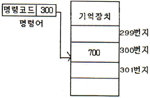
- 즉시주소지정(Immediate Address)
- 직접주소지정(Direct Address)
- 간접주소지정(Indirect Address)
- 상대주소지정(Relative Address)
(정답률: 알수없음)
원뿔각은 원주의 길이를 반지름으로 나눈 값인데, 이 경우에는 P점에서 S로 수직선을 내렸을 때 만나는 원의 반지름이 PA이고, 원주는 무한평면 S와 수직선이 이루는 원이므로 무한대이다. 따라서 원뿔각은 2π가 된다.
전체 입체각은 삼각뿔의 모든 면에 대한 입체각의 합인데, 이 경우에는 삼각뿔의 밑면이 원이므로, 밑면의 입체각은 2π이고, 옆면의 입체각은 직각삼각형의 빗변을 대각선으로 하는 정사각형의 입체각과 같으므로 2π/4 = π/2이다. 따라서 전체 입체각은 2π + 3(π/2) = 2π이다.